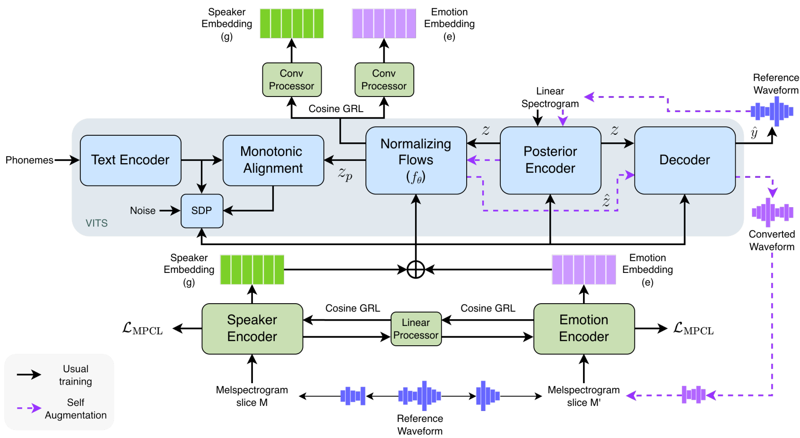

17. Motivation (2026.06.01)
| MeetingPaper 1 |
Z. Last Meeting Summary
- prompting TTS를 voice cloning TTS와 유사한 형태로 동작시키는 continuation 방식 소개
A. Evaluation Gap
1. Ref vs Gen
기존 TTS 평가는 주로 다음 형태
reference audio / instruction
↓
TTS model
↓
generated audio
↓
reference와 비교주로 보는 것:
- 음질 (UTMOS)
- 발음 정확도 (WER)
- speaker similarity (COS SIM)
- reference와의 유사도 (COS SIM)
이 방식은 voice cloning / zero-shot TTS 평가에는 자연스러움.
하지만 다음과 같은 한계 존재
reference 하나와 generation 하나를 비교하면, 같은 조건에서 여러 content를 생성했을 때 voice condition이 안정적으로 유지되는지는 보기 어려움.
2. Prompting TTS
최근 prompting TTS에서는 condition이 audio reference가 아닌 경우가 발생.
"angry middle-aged male voice"
"calm young female narrator"
"low-pitched energetic speaker"즉, 모델은 reference audio가 아니라 자연어 voice/style condition을 보고 음성을 생성.
문제는 이때 평가 기준이 바뀜.
“reference와 비슷한가?” → ”같은 condition이 주어졌을 때 일관되게 생성되는가?”
3. Gen vs Gen
따라서 기존 평가 방식처럼 reference와 generation을 비교하기보다, 같은 condition에서 나온 generation끼리 비교하는 방식을 제시함.
same voice/style condition
↓
content 1 → generated audio 1
content 2 → generated audio 2
content 3 → generated audio 3
↓
generated audio들끼리 비교핵심 질문:
같은 condition을 줬을 때, content가 바뀌어도 생성 음성이 같은 voice로 유지되는가?
여기서 voice는 단순 speaker만이 아니라, speaker + style condition을 포함.
다음 논의는 “같은 voice라는 것을 어떻게 측정하는가?”로 넘어감.
B. Speaker Metric Gap
1. Speaker Similarity
현재 가장 자연스러운 평가는 speaker encoder 기반 cosine similarity.
audio A → speaker encoder → speaker embedding A
audio B → speaker encoder → speaker embedding B
cosine similarity(A, B)이 방식은 speaker verification에서 쓰이는 표준적인 방향.
하지만 이 metric이 답하는 질문 다음과 같음.
두 음성이 같은 speaker처럼 들리는가?
2. Style Blind Spot
Prompting TTS에서는 speaker만 유지되면 충분하지 않음.
예를 들어 condition이 다음과 같다면:
speaker: middle-aged male
style: angry / energetic / fast / high energy평가해야 할 것은 두 가지.
- 같은 사람처럼 들리는가?
- 같은 style condition이 유지되는가?
문제는 speaker encoder가 2번을 위해 학습된 모델이 아니라는 점.
다시 말해,
speaker encoder가 speaker verification을 위해 학습되었기 때문에, style을 분리되고 해석 가능한 metric으로 제공하지 못함.
따라서 speaker similarity만으로는 다음 상황을 구분하기 어렵다.
same speaker / same style
same speaker / different style3. Metric Pair
그래서 benchmark에는 speaker metric만으로는 부족.
다음과 같은 구조가 필요.
Generated audio pair
↓
┌────────────────────┐
│ speaker encoder │ → speaker consistency
└────────────────────┘
┌────────────────────┐
│ style encoder │ → style consistency
└────────────────────┘정리하면:
- speaker encoder: speaker identity 유지 여부 측정
- style encoder: speaker identity 외 voice/style condition 유지 여부 측정
핵심 주장:
TTS consistency benchmark에서는 speaker consistency와 style consistency를 분리해서 봐야 함.
{kind=link}

C. Style Framing
1. Style Condition
작업 정의:
speaker identity 이외에, prompt나 reference condition으로 제어되기를 기대하는 voice / speaking characteristics
포함될 수 있는 것:
- pitch tendency
- speaking rate
- energy / loudness
- rhythm / pause
- prosody
- emotion-like expression
- speaking manner
LibriTTS-P는 이 출발점을 제공.
- speaker prompt
- style prompt
하지만 LibriTTS-P의 style은 pitch / speed / energy 중심이므로, 최종 benchmark의 style 정의를 여기에만 제한하면 안 됨.
2. Relative Consistency
style이 content와 완전히 독립이어야 한다고 주장하면 방어가 어려움.
사람도 문장 내용에 따라 자연스럽게 억양과 리듬이 바뀌기 때문
따라서 목표는 absolute consistency가 아님.
content가 달라도 acoustic feature가 완전히 같아야 한다. X
같은 style condition 안의 변화는, 다른 style condition 간 변화보다 작아야 한다. O즉, 상대적 기준이 필요.
same condition pair → 가까워야 함
different condition pair → 멀어야 함content-dependent prosody는 허용하되, condition 자체가 drift되는 것은 측정해야 함.
3. Evaluation Cases
기본 평가 케이스는 다음과 같이 잡을 수 있음.
Case 1. speaker o / style o
Case 2. speaker o / style x
Case 3. speaker x / style x추가로 어려운 케이스:
Case 4. speaker x / style o이 케이스는 이상적으로는 중요함.
하지만 style이 speaker-independent하다는 것을 강하게 보이려면:
- human validation
- condition design
- generated data 신뢰도 검증
이 필요
style은 speaker에 dependent하나 특정 상황에선 따로 측정 가능하다고 가정
4. Data Preparation
style 평가를 위한 데이터는 기계적/style tagging 모델로 생성해야 함.
content는 고정한 상태로 speaker, style 변화에 따른 차이를 측정해야 하기 때문
style tagging 모델로 생성한 데이터의 경우, 생성 모델의 artifact가 평가에 영향을 줌.
따라서 하나의 모델 출력을 사용하는 것이 아닌, 여러 모델의 생성을 조합하는 등의 artifact의 영향을 줄이는 방향의 고민이 필요.
→ Benchmark의 경우 generalization 능력을 평가해야 하기 때문임.
D. Measurement Direction
1. Encoder Pair
현재 방향은 benchmark를 위해 다음 pair를 도입하는 것.
speaker encoder + style encoder역할을 다음과 같이 나눔.
speaker encoder
→ 같은 사람처럼 들리는가?
style encoder
→ speaker identity 외 condition이 유지되는가?목적은 speaker 외 음성 특성 차이를 embedding space에서 비교 가능하게 만드는 것.
2. Candidate Design
Candidate A. Shared Backbone + Two Heads
audio
↓
shared speech backbone
↓
┌──────────────┬──────────────┐
speaker head style head
↓ ↓
z_speaker z_style장점:
- speaker / style을 같은 입력에서 분리하는 구조를 논의하기 쉬움.
- GRL이나 leakage control을 붙이기 쉬움.
위험:
- backbone이 실제로 style까지 충분히 담는지 검증 필요.
- 두 embedding이 어떻게 분리되는지 명확한 학습 signal이 필요.
Candidate B. Channelized Style Encoder
audio
↓
known style channels
- pitch
- energy
- temporal / rhythm
...
+
- unknown style channel
↓
fusion network
↓
┌──────────────┬──────────────┐
speaker head style head
↓ ↓
z_speaker z_style장점:
- 중간 channel이 있어 설명 가능성이 높음.
위험:
- known feature만으로 style을 정의했다는 bias가 생길 수 있음.
- unknown channel을 어떻게 학습/검증할지가 핵심.
3. Issues
- style encoder를 만들 때 어떤 구조가 가장 타당한가?
- generated data로 style variation을 만들 경우 model artifact를 어떻게 통제할 것인가?
E. Feedback
1. 이미지 생성 분야에서 Instruction following 성능 측정 어떻게 하는지 조사하기
2. VA Prediction 분야 찾아보기
3. 화자와 스타일이 독리빌 수 있는지 분석해오기